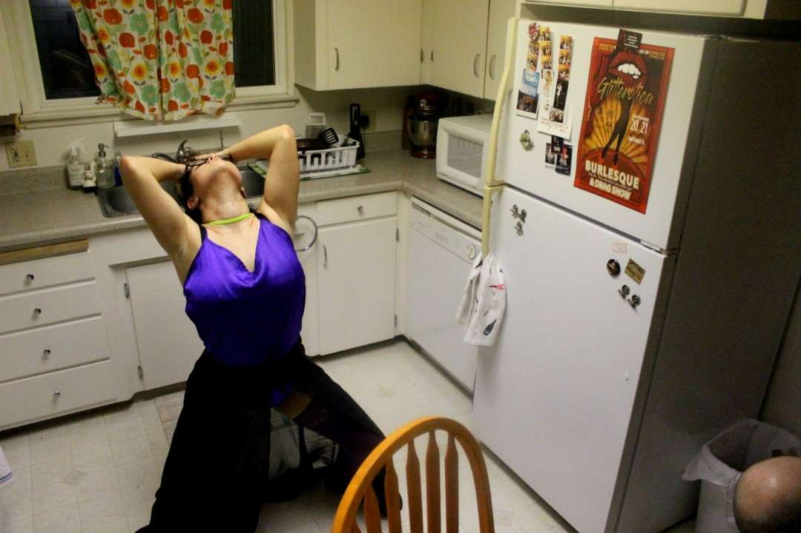

1 / 3
It’s a Tuesday night in Arroyo Grande, CA. Unbeknownst to neighbors, SLO burlesque troupe Glitterotica rehearse in a unit behind one of the houses. CAL POLY SLO Political Science and Ethnic Studies senior Bethany Porta (left), who uses they/them pronouns, stretches before practice their striptease routine. When they turned 21, they joined the troupe. “I live with my grandparents in Pismo. Unfortunately, my grandmother told my parents I joined and long story short--they were not pleased,” Porta recalled.
2 / 10
Twenty minutes later, Porta gears up for one of the dance numbers in the Glitterotica founder (not pictured), Alex Milaychev’s, bathroom. They are careful not to rip the stocking because the cost of costumes has recently put a financial strain on Porta. In two weeks, they will find out whether they got the job at GALA (Gay and Lesbian Alliance) in downtown SLO.
3 / 10
“ It’s sensuality. It’s confidence. It’s skill. But most of all, it’s freeing medium that means something different to different people,” said Alex Milaychev, the founder of Glitterotica, partially pictured in neon orange stockings. Porta slightly dodges Milyachev’s heels after a timing error occurred. They continue the number without any incident.
4 / 10
Porta tries to stretch while waiting for direction. Their feet still ache from wearing the high heeled boots for most of the day. Because they accidentally forgot their business casual shoes, Porta went to the GALA interview in the platform boots.
5 / 10
Porta is filled with anxiety as they get ready to perform their piece; Since school and other obligations such as heading CAL POLY SLO Students for Quality Education (SQE) take up much of their time, there was a rushed practice hours before rehearsal. They fear they won’t remember most of the choreography. They try not to let their frustration show as they rifle through their belongings. Glitterotica only has a couple of shows a year, so there leaves little opportunity for improvement.
6 / 10
Glitterotica stage manager Sarryh Harris whose stage name in the troupe is Fisted Sister spoons Porta as they watch other performers rehearse. The spooning is a welcome gesture to Porta who is still worried about their performance coming up next. Porta and Harris are family friends with Harris taking on a guardian role to Porta in the troupe. Harris is the one who encourages Porta to join after they turned 21. “To bring people to an opportunity is a favor. To bring family to an opportunity is something special,” said Harris.
7/ 10

Here Porta hums to the Earned it by the Weeknd the music for their dance piece. Twenty minutes prior, stage manager Sarryh Harris (not pictured) instructed Porta to emote more. Frustrated by messing up the choreography, Porta soon realizes they keep tripping on the skirt. The only option was to hike up the skirt and continue practicing.
8/ 10
The other burlesque dancers watch in bated breath as Porta slowly eases into a split. Days before, Porta saw a chiropractor after complaining of back pain the first couple practices. Stage Manager Syrrah Harris (not pictured) waits in the wings in case anything goes south. Luckily, Porta cleanly executes the split and is met with loud cheers and approval.
9/ 10
Porta’s music she emailed prior to practice is unable to open. While the issue is being fixed, Porta stares away from the other performers, still shaky on the choreography. Porta prefaces their performance by saying that the piece is still very choppy to which was met with aggressive reassurance from troupe members.
10/
Rehearsals are starting to wrap up. Porta (left) and troupe member, who preferred to go by their stage name Beatrix Hotter, wait for logistics for the Upcoming Valentine's Day show. Porta has a short drive back to Pismo, but an even shorter time for panic to set in if they don’t master the choreography by next Tuesday’s practice.
❮
❯